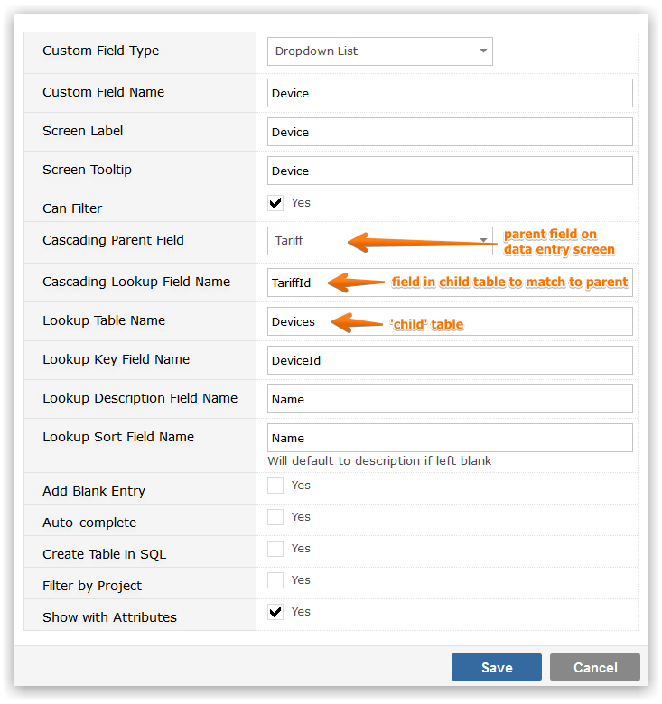

Where the value of one field depends on the value of another you can use a Cascading Custom field. You should always start by defining the highest level parent table, for example if you wish to cascade Country to State to Zip Code you should start by defining the Country table. When you create the child level definitions, you will be prompted to select the parent table. It follows that the highest level from which field cascade cannot be a 'cascading' dynamic lookup
You will be prompted for the following information
Example:
In the above example when defining a cascading lookup for devices, you would be expected to already have selected a Cascading Lookup field for tariff from the tariff table. If you call this field 'tariff' the Cascading Parent Field for devices would be 'tariff' and the Lookup Field Name would be 'tariffid', the foreign key to the tariff table in the device table.

NoteThe Custom Field screen will only create simple Field/Description tables in SQL. A table like 'devices' in the example above is a complex table because of the 'tariffid' field. Child tables in Cascading Custom Fields must be created using a SQL tool such as SQL Management Studio.